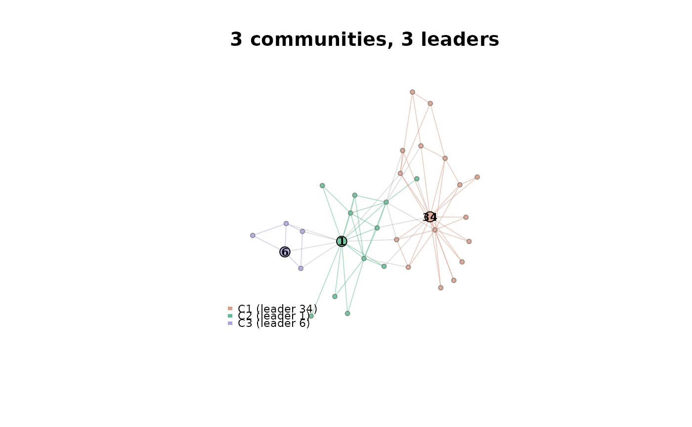

Detect communities and leaders on a graph, then plot them
Source:R/plot_leaders.R
lcda_plot_communities.RdThe one-call path from a bare graph to the paper's community-and-leader figure: run one of the LCDA algorithms, take the partition and the leader it designates for each community, and render them with [plot_partition()].
Arguments
- graph
an [igraph::igraph] object (undirected, simple).
- method
which algorithm to run: `"gr"` ([lcda_gr()], the reactive variant and the default), `"grasp"` ([lcda_grasp()]), or `"ecg"` ([lcda_ecg()], the ensemble consensus, which also yields node confidences).
- args
a named list of extra arguments for the chosen algorithm, e.g. `list(B = 100, variant = 2)`.
- seed
integer RNG seed for the run, or `NA` to leave the RNG untouched. Also seeds the layout, so the figure is reproducible.
- plot
logical; set to `FALSE` to fit and return without drawing.
- verbose
logical; passed to the algorithm.
- ...
further arguments passed to [plot_partition()] (`layout`, `legend`, `mark_communities`, ...).
Value
invisibly, the fitted result object (an `lcda_gr_result`, `lcda_grasp_result`, or `lcda_ecg_result`), with the layout used attached as the attribute `"lcda_layout"`. Feed it straight to [lcda_metrics()].
Examples
g <- igraph::make_graph("Zachary")
res <- lcda_plot_communities(g, method = "grasp", args = list(B = 20), seed = 1)

lcda_metrics(res, level = "leader")
#> # A tibble: 3 × 14
#> algorithm community leader leader_name community_size degree degree_within
#> <chr> <int> <int> <chr> <int> <dbl> <dbl>
#> 1 LCDA-GRASP 1 34 34 17 17 14
#> 2 LCDA-GRASP 2 1 1 12 16 10
#> 3 LCDA-GRASP 3 6 6 5 4 3
#> # ℹ 7 more variables: degree_between <dbl>, eigen_centrality <dbl>,
#> # nce_node <dbl>, participation <dbl>, degree_rank_in_community <int>,
#> # degree_pctile_in_community <dbl>, source <chr>